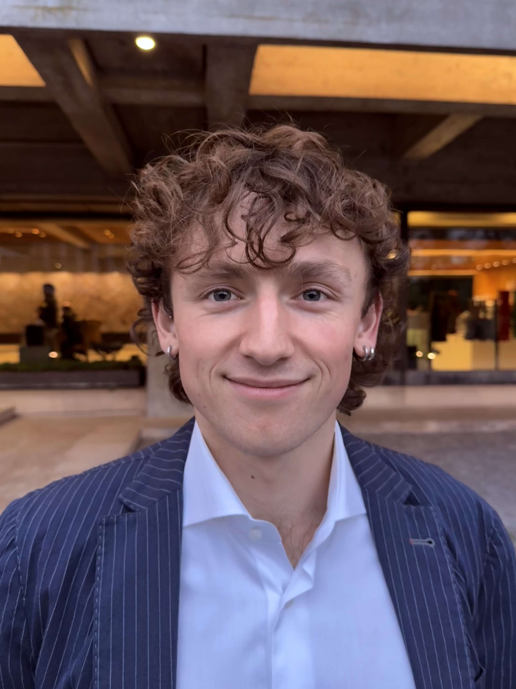

Justus Grabowsky
I am a PhD student at the Institute of Neuroinformatics of ETH Zürich working at the intersection of Neuroscience and Artificial Intelligence. My research focuses on investigating how language features are represented and combined in the brain to form a unified meaning. I am also interested in how this happens in large language models.
Outside of academia, I am a Venture Fellow at Creator Fund, investing in early-stage deep tech startups.